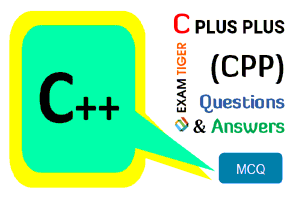

Programming Languages
There are many programming languages in which C, C#, C++, Java, JavaScript and Phython. But this is the fact that there are more demands of web softwares than Desktop Applications or Software. If programmer wants to learn these languages, then he will have to practice of Questions and Answers as well as MCQs so that he could get knowledge about the languages. This is very best opportunity for programmers to do practice of programming languages. Here are the Practice Questions & Answers of progamming Languages. In this way, programmer could strong his programming and make web software.

MCQs of Programming Languages
MCQs is very important to check your knowledge. The programmer will have to check his qualities by testing of MCQs and coding.The MCQs of programming language might be compulsory for students who are learning Programming Language. Usually many institutes take MCQs based test from students as well as practical coding. But MCQs is efficient way to verify the concepts and IQ level of programmer because each and every programmer can take coding by google especially Web Developers whose take CSS coding of Bootstrap and build best website for clients. By this way , the programmer doesnot know about the basic concept of CSS and others programming languages. The programmer needs to check and verify his qualities by using Quiz and MCQs. The MCQs of programming languages are here.
Quiz of Programming Languages
The quiz web applications are very important for those who wants to prepare for their exams. This is the quiz application where you can play quiz of HTML,CSS, Javascript, Python, Java and C# etc. In this quiz application, you will have to play within the time and you can check your score with easily.
Best Web Developers:
There are many good website developers who build one of the best websites by using HTML, CSS, Bootstrap, JavaScript, React, Phython, Java, PHP, Node JS,Mongo DB and firebase etc. But unfortunately there are many web developers have come in Market by using Fiverr, Upwork, Freelancer and others platforms and they are very uneducated and they do not know about the basic web coding. By this way, clients are very afraid about uneducated freelancers bacause mostly these are scammer and take money and do not send good works for clients that is why the clients check the reviews of best web developers by using their profile of Fiverr, Upwork , Freelancer and Linkedin and usually Gitup profile. On the second way, there are many web developers whose have very strong commands in web programming but they have no any reviews and they did not take any order by using different platforms espacially Fiverr and Upwork because many web developers have come in this platform and usually the orders come in the profile of old freelancers and client donot deliver any order of unexperiance but educated freelancers. So client should try and give a chance of new freelancers. The one of the good web developer is here. You can send your tasks and projects and could get good services of website.
Best Guest Bloggers:
“Guest posting” means writing and publishing an article on someone else's website or blog. Guest blogging — also known as guest posting — is the practice of contributing a post to another person's blog in order to build relationships, exposure, authority, and backlinks. Guest blogging, as well as guest posting, is a content marketing and SEO strategy in which individuals write articles for other websites to promote their brands and businesses. Commonly, guest bloggers write content for websites and blogs which are related to their industry and have a broader audience. Guest Posting (Blogging) is very important way to famous the websites and get high quality backlinks from other websites. This is very good thing where the article is written and published on high quality websites which have best Domain Authority, Domain Rating, Reference Domain and best traffic rank. There are many high quality websites which had no traffic rank but fortunately now these websites are ranking in top 1000 websites because the website owner did guest posting work and famous their websites by Youtube, Facebook, Instragram and other websites as well as they published one of the best articles on their and other websites. By this way, now they are earning Millions Dollars by using their websites.
There are many questions which come in website owner's mind in which some are following:
• How do guest posts work?
Guest blogging is when you invite someone from outside of your company to write a blog that will be published on your website. The writer will usually work in the same industry as the organization or be an expert on the subjects to do with that organization.
• What is the benefit of guest posting?
Guest posting increases traffic and reach. By publishing content more frequently and on a wider range of topics, you can greatly expand your audience. Your guest writer may also bring followers of their own over to your blog
• How long should a guest post be?
It's been proven that long-form content between 1,000 - 2000 words generates 77% more backlinks and 56% more social shares than content shorter than 1,000 words. This is great for boosting your authority as a writer, whether your guest posting or writing for your own blog.
• Do guest bloggers get paid?
You pitch an idea to another blog, they approve it, you get more backlinks, and everyone's happy. Usually, no money exchanges hands during the process. However, that's not always the case. Nowadays, it's becoming more common for blogs to offer a payment to their guest bloggers, which is fantastic news.
The best guest bloggers have many qualities that they have 2000+ websites and have 2+ years experience of guest posting. They must have best websites of every topic like health, education, technology, sports and business also. They have best websites which have 80+ DA, PA, DR and RD as well as good traffic rank.
Here is the best blogger who has these qualities and he have good experience.